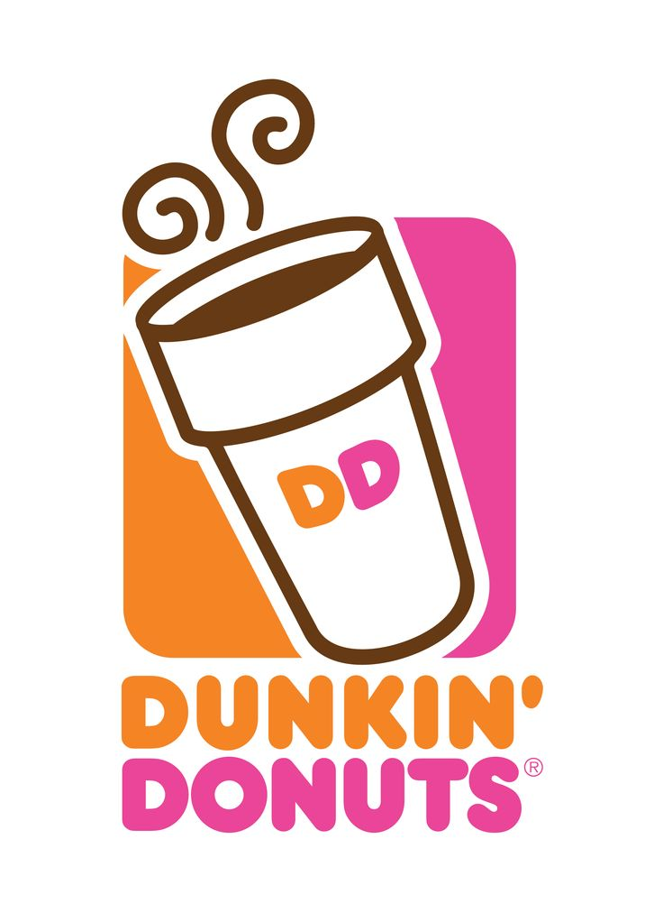
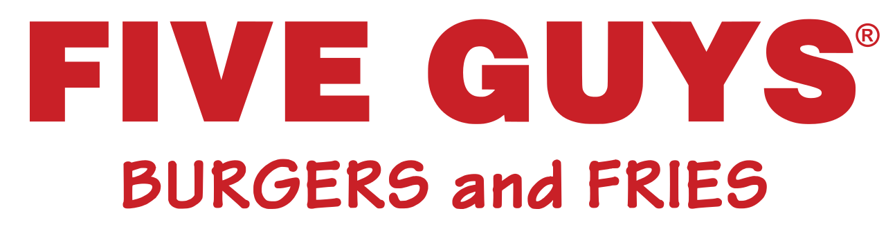

ALICE PIZZA

Directamente desde Roma para todo el mundo, ALICE PIZZA te trae las pizzas más auténticas y sabrosas preparadas de forma tradicional con una variadísima combinación de ingredientes. Además, Alice Pizza Río 2 ha sido galardonado con dos insignias por Recomendación según los comentarios de nuestros clientes y por Excelente Pizza en Restaurant Guru. La auténtica pizza de Roma al taglio, de masa excelente, elaborada de la forma tradicional por nuestros artesanos, levita durante 24 horas y es espesa, aunque muy ligera de digerir y crujiente. Acompañamos esta obra de arte con ingredientes de gran variedad que te sorprenderán por su originalidad y frescura, que van desde el chorizo picante, la clásica margarita, entre otras con ingredientes más innovadores como el salmón o las espinacas con diferentes tipos de quesos. Déjate sorprender con los increíbles sabores de nuestras pizzas, y disfrútalo en la calle, en casa o en el trabajo y con quien quieras. Además, los ingredientes hortofrutícolas manejados en esta pizzería proceden de producción local y de kilómetro cero. Te sorprenderás por la masa, de exquisita textura, aireada y sabrosa, una masa en la que el sabor del horno y del cereal tienen una presencia protagónica, más allá de servir únicamente como base de los ingredientes, descubrirás que la masa de Alice pizza tiene lugar y protagonismo para nosotros, y siempre buscarás alguna pizza que se le parezca en cuanto a la calidad y el protagonismo de la masa que hacemos en este establecimiento con todos los estándares de calidad y el cariño particular que le profesamos a este longevo producto, cultura y forma de entender la comida. Disfruta de Alice Pizza y las mejores porciones de pizza al taglio de todo Madrid en Centro Comercial Plaza Río 2.
Dunkin Coffee

DUNKIN’ COFEE sabe que tomar un café es para ti un momento especial. Es un momento ideal para conversar y compartir experiencias que reúne a amigos, colegas, familia, parejas y compañeros de trabajo. DUNKIN' COFFEE ha diseñado un espacio confortable, ameno y acogedor, en donde puedes disfrutar de la mejor variedad de cafés y dunkins a cualquier hora del día con productos de calidad y siempre originales. ¿A qué estás esperado? Disfruta de DUNKIN' COFFEE en Centro Comercial Plaza Río 2. Te esperamos en Avenida del Manzanares 210, en Madrid. Relájate y disfruta de un rato agradable en DUNKIN´ COFFEE.
Five guys

La exitosa cadena de restaurantes FIVE GUYS tiene más de 250.000 formas posibles de prepararte una hamburguesa. ¡Elígela como más te guste y con total libertad! Hamburguesas, perritos, sándwiches, toppings, deliciosas patatas fritas… La lista es interminable. El local de FIVE GUYS, situado en nuestra magnífica terraza, tiene mucho que ofrecerte: sólo carne vacuna de primera calidad, productos frescos, nada congelado y preparado al momento para ti.
Starbucks

En STARBUCKS siempre se ha tratado y siempre se tratará de calidad. Nuestra pasión por el café solo se compara con nuestro amor por compartirlo. Aspira su aroma, distingue sus notas de sabor y la consistencia de su textura… No es sólo café, es una experiencia única, es STARBUCKS. Disfruta del mejor café con STARBUCKS en Centro Comercial Plaza Río 2. Vive una experiencia única con nuestra variedad de productos y sus diferentes tipos, aromas, texturas y sabores. Te esperamos en Avenida del Manzanares número 210, en Madrid. ¿A qué estás esperando? Te va a encantar. Están tan deliciosos que no te vas a resistir a volver.
Brasayleña

Brasayleña es una cadena de rodizio brasileño, restaurantes de carnes asadas con la mejor calidad precio que se puede encontrar en el sector de la restauración. Es un concepto de restaurante en el que puedes comer carnes y guarniciones de manera ilimitada por un precio fijo. Podrás degustar las mejores carnes asadas cortadas a la espada y servidas en mesa por sus especialistas churrasqueros. Entre su variedad dispone de carne de res, pollo, cerdo, ternera y diferentes combinaciones. Acompaña los cortes con suculentas guarniciones como puré de patatas, maíz, ensaladas tropicales, arroces, frijoles, plátano frito… Además, en su variada carta hay una gran sección de coctelería, de la que destacan las bebidas originarias brasileñas: caipirinha, sangría brasileña o caipiroska entre otras. Lo exótico y tropical de Brasil se refleja también en sus postres, entre ellos, la famosa Piña asada con helado de coco, la Tarta de mango o maracuyá o la Explosão de chocolate.
VIPS

En VIPS estamos abiertos a todo: a la buena cocina sea de donde sea, con platos recién hechos a tu gusto para que los tomes cuando quieras a cualquier hora del día. Desde sándwiches, bowls, hamburguesas, tortitas y muchas cosas más que te sorprenderán. ¿A qué estás esperando para venir a VIPS? Disfruta de nuestra fabulosa carta cuando quieras. También puedes disfrutar de nuestras fantásticas promociones. Estamos en Centro Comercial Plaza Río 2, ubicados en Avenida del Manzanares número 210, Madrid. ¡Disfruta VIPS!